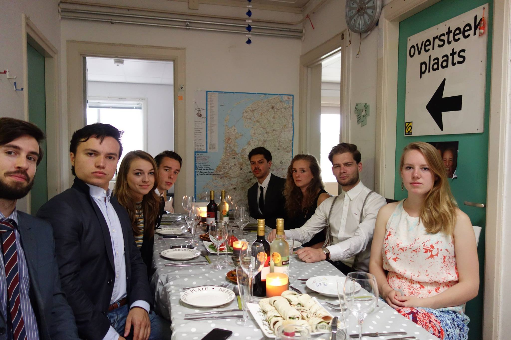
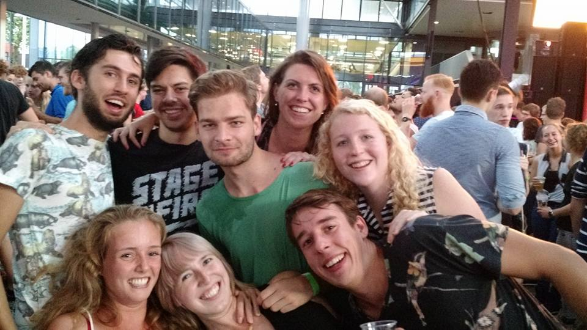

Jan Luyken (Johannes Luiken), (Amsterdam, 16 april 1649 - Amsterdam, 5 april 1712), was een dichter, schilder en etser uit de 17e eeuw. Hij werd geboren als zoon van de onderwijzer Caspar Luyken (die zelf ook een boek schreef, "Winst zonder Verlies") en Hester Coores. Zijn ouders waren doopsgezinde collegianten, volgelingen van dr. Abraham Galenus. De zoon was een levenslustige jongeling die schilderlessen volgde bij Martinus Saeghmolen, en had veel oog voor vrouwelijk schoon. Veel van zijn indrukken gaf hij vorm in zijn eerste dichtbundel "Duytse lier", die eind 1671 verscheen. Drie maanden later trouwde hij met een zangeres Maria de Ouden (1647 - 1682), aan wie het slotdicht van Duytse lier was gewijd. Samen kregen zij 5 kinderen die jong gestorven zijn, behalve zoon Caspar (Caspaares) (1672-1708), met wie hij later zijn bekendste boek maakte, Spiegel van het Menselyk Bedryf. Toen hij 26 jaar oud was, had hij een religieuze ervaring waardoor hij een degelijker leven wilde leiden en werd doopsgezind. Dat kwam tot uitdrukking in zijn dichtwerk, dat veel stichtelijker werd.
Het studentenhuis bestaat al sinds 1982 en huisvest maar liefst 9 studenten. De naam van het huis haalt zijn herkomst van de straatnaam: "Jan Luikenstraat". Het huis heeft ook een aantal tradities. Zo wordt er elk jaar een huisfeest georganiseerd waarbij alle gangen in het thema worden verbouwd. Ook mag elke nieuwe bewoner zijn hand op de muur zetten in de keuken na een huiselijk ritueel met de huisdrank.
De Schrijversbuurt is een buurt in de wijk Rozenknopje in het stadsdeel Gestel, Eindhoven. De buurt ligt in het zuiden van Eindhoven tegen het stadsdeel Centrum aan, ten oosten van de Hoogstraat. De meeste straatnamen zijn vernoemd naar Nederlandse en Vlaamse schrijvers en dichters. De woningen zijn voor een groot deel in de jaren 1925-35 gebouwd. Huize Lucky Luik is gevestigd in de Jan Luikenstraat in een van de vele monumentale panden.
Nijs de Vries
Penningmeester
Luuk van den Elzen
Huisoudste
Luke Noothout
Huize Lucky Luik
Jan Luikenstraat 26
5615JM, Eindhoven